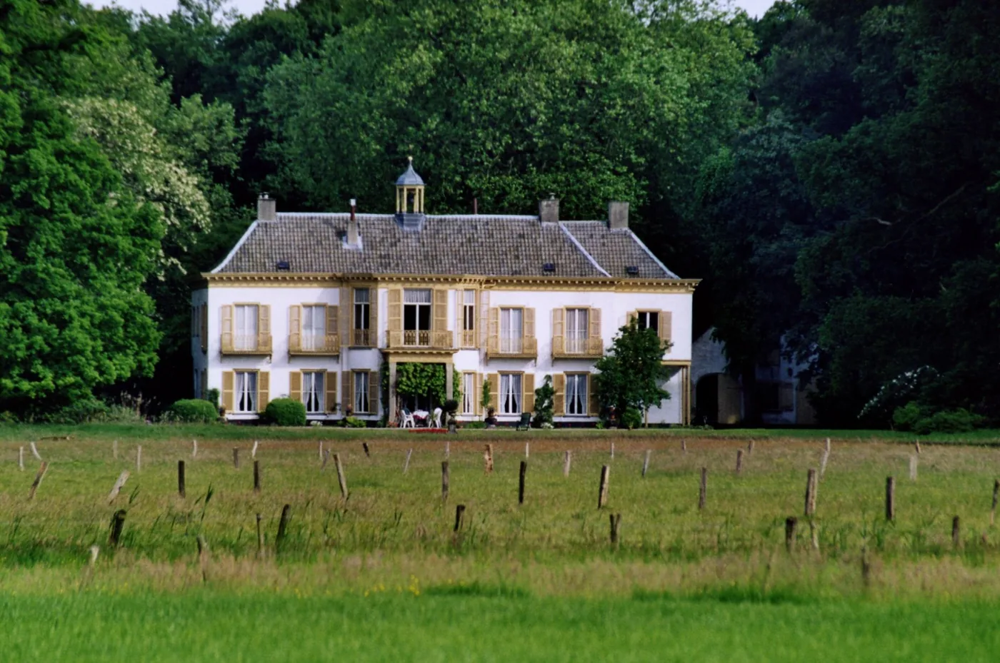

شبكة شام–برابانت التاريخية



بحث أم يعيد تنظيم أبحاث المكان حول شبكة تاريخية حقيقية بدل دائرة عشوائية. القلب التفصيلي يمتد 50 كم حول شام، الشبكة الرئيسية 120 كم، وأي عقدة أبعد تُضم فقط عندما يثبت رابط وثائقي أو مؤسسي مباشر.
العائلات البحثية داخل الشبكة
ألفن قبل ألفن
كيرك أكّرس، المقبرة الميروفنجية، انتقال الاستيطان، والسكن قرب الكنيسة زمن 709.
شام–بريدا
المكان والذاكرة والرعاية والبارونية؛ يصبح الآن فرع القلب المحلي لا أطلسًا منفصلًا.
ويليبرورد–إختِرناخ
ألفهايم 709، ملكية إختِرناخ، حقوق الكنيسة، فالره/تِكساندريا والعقد الخارجية.
تونخرلو وشبكة النوربرتينيين
حقوق ألفن منذ 1175، الرعاية الفعلية لاحقًا، وعقد مثل رافلس وريتي وهيرسلت.
تير براكة
المعبدّيون ثم فرسان القديس يوحنا/مالطا، وتقاطع الحقوق مع بريدا وإختِرناخ وتورنهاوت.
بريدا–ناساو
سادة بريدا، اندماج المجال في دوقية برابانت، ثم طبقة ناساو السياسية.
هوخستراتن
الحدود، الدم المقدس، النبلاء، الحج، الحرب وإعادة البناء.
أطلس 120 كم
سجل العقد القابل للتصفية: مواقع، مؤسسات، أحداث، روابط ودرجات يقين.
شام تحت السطح
الآثار والمقابر والكنائس والتحولات الطائفية ضمن ملف محلي واحد.
عائلة يانسن
النسب المثبت، شؤون الكنائس، وفصل تشابه الأسماء عن القرابة.
السلسلة التي تنظّم البحث
قاعدة الإثبات
مصادر الأساس
سجل الأرشيف والأشخاص والعائلات · طبقة التتبع
| العقدة | الدليل/الشخص | ما يثبته | الدرجة |
|---|---|---|---|
| ألفن–شام | محكمة ألفن وشام | 7 قضاة محليين: 4 من ألفن و3 من شام؛ الاستئناف إلى بريدا. مدخل أساسي لتتبع الملكيات والعائلات. | A |
| 1525–1717 | Vestbrieven | نقل ورهن العقارات في ألفن وشام؛ أقدم سلسلة عملية لإعادة بناء شبكات الأرض والقرابة. | A |
| 1717+ | RAT 2106 · 611–618 | استمرار سجلات التملك بعد 1717. | A |
| 1604–1810 | دفاتر العماد والزواج والدفن | ربط الأسر عبر الأجيال ومقاطعتها مع الملكيات والقضاء. | A |
| 1587–1810 | سجلات أمناء الفقراء | شبكات الإحسان والفقر والإدارة المحلية؛ مهمة لمحور عمل الخير. | A |
| 1508–1712 | فيخن → فان أستن → دي روي | تسلسل ملكية مبنى/مخمرة محلية: توماس خيليس فيخن، ابنه يان، أسرة فان أستن، ثم أسرة دي روي من ويِلده. | B |
| 1557 | أدريان هندريكس فان دن نيوفاينده | اسم قاضٍ/عضو محكمة ألفني يظهر في وثيقة؛ عقدة شخص قابلة للربط بسجلات الملكية. | B |
| 1648 | أدريان يانسن فان دن كيبوم الملقب كين | نزاع إرث محفوظ في مجلس برابانت؛ مثال على إمكان تتبع القرابة خارج الأرشيف المحلي. | A/B |
| †1618 | لوريس فان أستن | كان شوت ألفن وبارله وشام وفي الوقت نفسه وكيل/مدير أملاك دير تونخرلو؛ عقدة بشرية مباشرة بين السلطة المحلية وشبكة الدير. | A |
| 1685–1711 | هوخو فان دن كيركهوفن | خدم راعيًا في شام منذ 1685 ثم في ألفن من 1699؛ تقاعد إلى تونخرلو بعد نزاع مع الدروسارد البروتستانتي لبريدا. يربط شام–ألفن–تونخرلو–بريدا دينيًا وسياسيًا. | B |
| 1639+ | فان خيلس × فان دن كيبوم | وثائق شام تُظهر زواجًا وإرثًا وعقارات بين الأسرتين؛ مثال قوي لبناء شبكة قرابة من vestbrieven بدل التشابه الاسمي. | A/B |
مسارات الأرشيف المثبتة
Regionaal Archief Tilburg: المحكمة، البلدية، DTB، الكادستر، أمناء الفقراء، والموثقون. Stadsarchief Breda: سجلات Vestbrieven الأقدم. BHIC/Hoofd- en Leenbank Breda: الاستئناف والقضايا. تراث ألفن يحتفظ أيضاً بنسخ مفرغة من معاملات الإرث والبيع والشراء منذ نحو 1640.